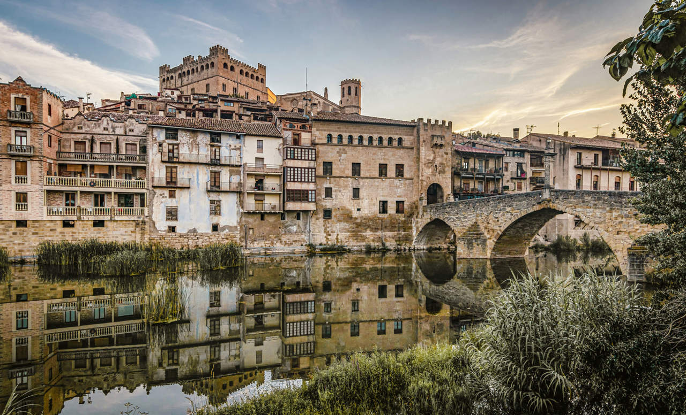

Imagenes de interes
Mi página de imágenes y viaje
¡Bienvenidos a mi página! Aquí podrás ver algunas fotos que representan mi pueblo, mis viajes y mis intereses.
1. Valderrobres (Mi pueblo)
Valderrobres es un hermoso pueblo ubicado en la provincia de Teruel, en la región de Aragón, España. Su arquitectura medieval y su río Matarraña lo hacen un lugar único.

2. Viaje a Biella
Hace poco realicé un viaje a Biella, una ciudad en el norte de Italia, famosa por su rica historia y hermosos paisajes. Fue una experiencia increíble.
3. Interés en Brockhampton
Brockhampton es un colectivo musical que ha influido mucho en mi vida. Su estilo único y su energía creativa me han inspirado profundamente.
Gracias por visitar mi página. ¡Espero que disfrutes las imágenes!